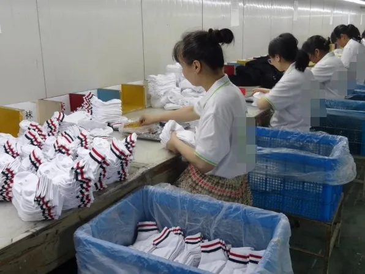

Buyer page — Europe
Most of our European cartons go to the UK, Germany, France, Belgium, Austria and Italy, and the questions those buyers ask are not the questions a US buyer asks. Fibre percentages, the scope of a certificate, what the sock is packed in, and who registers for what. This page takes them in the order they come up.

The order, in European terms
Eight lines. The first four are commercial; the rest are paperwork.
| Markets | UK, Germany, France, Belgium, Austria, Italy and others |
|---|---|
| Ports | Shanghai or Ningbo; sea, rail and air |
| Trade terms | EXW, FOB, CIF or DDP — quoted per order |
| Minimum | 100 pairs per colour, on every height |
| Samples / bulk | 3–5 days for a sample, 20 days for 1–500 pairs |
| Fibre labelling | Composition in percentages, Regulation (EU) 1007/2011 |
| OEKO-TEX scope | Cotton and elastane only — held by our suppliers |
| Packing | Poly bag, header card, hang tag, retail box, barcode label |
Labels
Buyers and factories talk past each other on this more than on anything else.
Regulation (EU) No 1007/2011 requires the fibre composition of a textile product to be on the product, in percentages, using the standard fibre names. On a sock that usually means a printed or woven line inside the cuff reading something like 78% cotton, 20% polyamide, 2% elastane. The United Kingdom carried the same requirements into domestic law in 2021, so one wording serves both markets.
Care symbols are a different story. There is no EU-wide obligation to print washing symbols on a sock: ISO 3758 and the GINETEX symbols are voluntary. Almost every buyer asks for them anyway, because no retailer will list a sock without them, and because on a grip sock the care line is what protects the print. We print them — just know which half of the label someone will audit.
The composition line is not only a label. Knitted socks sit in HS 6115, and the six-figure line depends on the fibre, so a composition that drifts by ten percent can move the goods to a different statistical line at the border. That is a reason to fix the blend at sampling rather than adjust it later.
Certificates
The certificate is worth exactly as much as the material it names.
Two certificates cover our cotton and our elastane. They belong to the mills that supply those materials, not to us, and that is the normal arrangement: OEKO-TEX is held upstream, by the yarn or dye supplier, by most factories that legitimately claim it.
For a cotton or cotton-rich sock with elastane, the documents apply, and the certificate numbers are on the certificates page with the holder named next to each one. For a polyester, acrylic or recycled body from another mill, the relevant certificate is that mill’s, and it is asked for at order stage because the material decides which document applies.
A factory that says it is “OEKO-TEX certified” for every material it runs is either paraphrasing or guessing. Ask for the certificate number and the material it names; the two either match your order or they do not.
Packaging
The Packaging and Packaging Waste Regulation has applied since 12 August 2026.
Regulation (EU) 2025/40 brings the parts that reach a sock order first: a harmonised labelling system for packaging from 2028, then limits on empty space, restrictions on certain single-use plastic packaging, recycled-content obligations and a recyclability requirement from 2030.
The practical effect on a quote is that the poly bag, the header card and the box are now a compliance decision as well as a cost one. Tell us the material your market accepts and we pack to it. Empty space is the one to watch on socks: a carton fills badly, and a carton that is mostly air is exactly what the 2030 limits are aimed at.
Packaging EPR registration is the importer’s obligation and sits in your name, not ours. The other half of the same problem — how carton dimensions turn into a freight bill — is in the carton maths.
Textile EPR
The question worth putting to any factory now is not whether it is compliant.
The revised Waste Framework Directive, Directive (EU) 2025/1892, requires member states to transpose by 17 June 2027 and to have textile EPR schemes running by 17 April 2028. Fees under those schemes are calculated on material and weight, component by component.
So the useful ask is narrower: can the factory hand you the weight and material of every component in the pack. We can, per order — sock, bag, card, sticker, box, each with its material and its fibre content. It is a page of numbers, and it is produced from the actual order rather than from a template.
The same sheet is what a digital product passport will want. The textile delegated act under the Ecodesign for Sustainable Products Regulation is expected around late 2027, with obligations following after it. Building the sheet now takes an afternoon; building it under deadline costs a season.
Limits
Some of it belongs to you or your EU entity, and pretending otherwise wastes your time.
We are a manufacturer in Jiaxing, not an EU-established importer. We cannot act as the producer for packaging or textile EPR, we cannot register on your behalf, and we cannot issue a declaration of conformity as though we were the EU manufacturer. DDP is available and does not change any of that.
We also do not translate compliance wording, and we do not certify materials we did not buy. What we do is the other half: hold the specification, keep the approved sample as the reference for every reorder, supply the material and weight data, host a third-party inspection at your cost, and send the shipping documents the day the order leaves.
How an order runs
Composition percentages, care codes and the language of the label are agreed before sampling, because a label change after bulk is a second run and a second shipment.
Knitted and finished from your artwork, sent for approval. Keep it: it is the reference every reorder is measured against.
One to five hundred pairs on our own floor. Larger programmes run through partner factories against the same specification and the same approved sample.
Sea, rail or air — the transit you pick decides the last stretch. Shipping documents and the tracking number go out the day the order leaves.
Questions buyers ask
Straight answers, no sales copy.
Two certificates cover our cotton and our elastane, and they are held by the mills that supply those materials rather than by us. OEKO-TEX is normally held upstream, by the yarn or dye supplier. What matters for your order is whether the certificate names the exact material in it — cotton and elastane: yes; a polyester, acrylic or recycled body from a different mill: that mill's certificate, asked for at order stage.
Yes, and it is quoted per order alongside EXW, FOB and CIF. DDP puts freight and duty inside one number through a forwarder, which is usually what a first-time importer wants. It does not make us the producer for packaging or textile EPR purposes — that registration stays with the brand or the importer.
100 pairs per colour, knee-high styles 200. Samples take 3–5 days after artwork approval and bulk takes 20 days for one to five hundred pairs. Larger seasonal programmes run through partner factories on the same specification and the same approved sample.
Send the wording and we print it exactly. We do not translate care or composition lines: a compliance statement translated by a factory is a risk you carry, and the wording should come from you or your testing lab.
The UK, Germany, France, Belgium, Austria and Italy, among others. Cartons leave from Shanghai or Ningbo by sea, rail or air, and which European port they land at is decided by your forwarder or ours.
Raise it before sampling, because the yarn is chosen with the certificate in mind. GRS, like OEKO-TEX, is held upstream by the mill rather than by the knitter, and we will not put a GRS mark on a sock unless a transaction certificate covers that order. What GRS actually requires is the long version.
Buying by situation
Same factory, different order shapes.
Tell us the country, the fibre you need and the packing your market accepts, and the reply is a price band, the certificate scope that applies and a mock-up date.